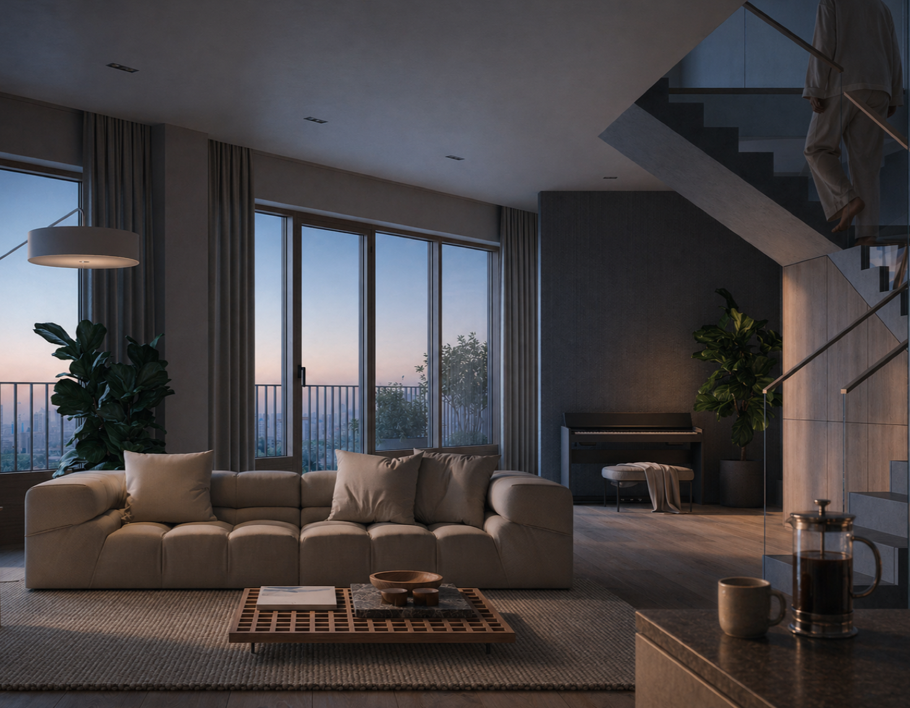

07:15
Окно.
Снова окно.
И ещё одно окно.
Открываете глаза. Окно — в пол. Какая бы ни была погода, первое, что вы видите, — небо.
Идёте в ванную. У ванной тоже окно. Чистите зубы и смотрите на город — и в первые дни после переезда ловите себя на этом как на странности: ванная, утренний ритуал, и вдруг — вид. Через месяц это станет нормой. Через год вы не сможете снять квартиру без окна в ванной.
Если у вас двухуровневая — спускаетесь на кухню по собственной лестнице. Да, у вас собственная лестница. В собственной квартире. Витраж в два этажа — город встаёт вам навстречу в полный рост. С этим ощущением ещё предстоит свыкнуться.
Кофе делаете на своей кухне — какой вы её сделали. White box: ровные стены, выведенная инженерия, чистый воздух для вашей мысли о том, как тут жить.
